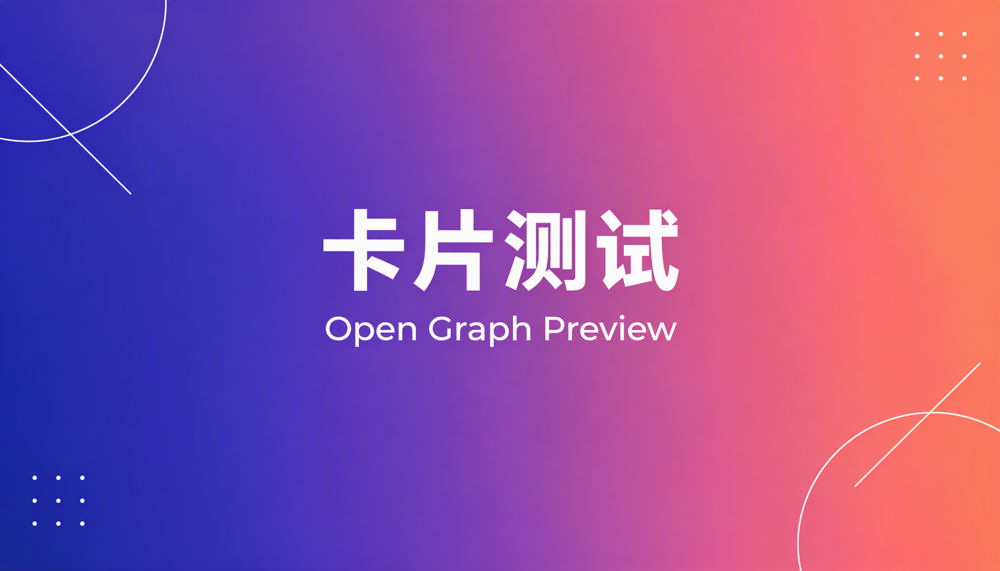

卡片测试
这个页面用来验证：把链接发到社交平台，是否会被抓成「标题 + 封面图」的分享卡片。
怎么测
| 微信 · 从页面右上角 ··· 转发 | 可能出卡片（走 JS-SDK，本页未接） |
| 微信 · 聊天里直接粘贴 URL | 永远是蓝色纯文本 |
| QQ / 钉钉 / 飞书 | 粘贴即出卡片，读 OG |
| Telegram / Slack / Discord / X | 粘贴即出卡片，读 OG |
微信没有通用的 link unfurling。聊天卡片只能由公众号文章、小程序、视频号、收藏笔记、企业微信消息这五类实体产生，自有 H5 不在其中——OG 标签写得再全也没用。想验证 OG 本身是否正确，用上面打勾的平台。
本页声明的 OG 字段
| og:title | 卡片测试 · Open Graph Preview |
| og:description | 如果你在聊天里看到标题+封面图的横条卡片… |
| og:image | https://huhuun.github.io/og-card-test/cover.png |
| og:image:width / height | 1200 × 630 |
| og:url | https://huhuun.github.io/og-card-test/ |
| og:type / og:locale | website / zh_CN |
| twitter:card | summary_large_image |
另外还写了 <title>、meta description、itemprop 和一张正文内 <img>——部分抓取器（含微信内置浏览器）不读 OG，会退回用这几个字段拼标题和缩略图。
已知坑
| github.io 在境内网络时通时断，微信内可能直接打不开 | 网络层 |
| 抓取器有缓存，改了 OG 不会立刻生效 | 需清缓存或用调试工具 |
| og:image 必须是绝对 HTTPS 地址 | 相对路径一律失败 |
| 图建议 ≥ 1200×630 且 < 1MB | 过大不抓 |